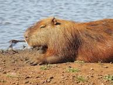

This is a paragraph? One
This is a second paragraph? Two
What's he that wishes so? My cousin Westmoreland? No, my fair cousin: If we are marked to die, we are enow To do our country loss; and if to live, The fewer men, the greater share of honour. God's will! I pray thee, wish not one man more. By Jove, I am not covetous for gold, Nor care I who doth feed upon my cost; It yearns me not if men my garments wear; Such outward things dwell not in my desires: But if it be a sin to covet honour, I am the most offending soul alive. No, faith, my coz, wish not a man from England: God's peace! I would not lose so great an honour As one man more, methinks, would share from me For the best hope I have. O, do not wish one more! Rather proclaim it, Westmoreland, through my host, That he which hath no stomach to this fight, Let him depart; his passport shall be made And crowns for convoy put into his purse: We would not die in that man's company That fears his fellowship to die with us. This day is called the feast of Crispian: He that outlives this day, and comes safe home, Will stand a tip-toe when the day is named, And rouse him at the name of Crispian. He that shall live this day, and see old age, Will yearly on the vigil feast his neighbours, And say To-morrow is Saint Crispian: Then will he strip his sleeve and show his scars. And say These wounds I had on Crispin's day. Old men forget: yet all shall be forgot, But he'll remember with advantages What feats he did that day: then shall our names. Familiar in his mouth as household words Harry the king, Bedford and Exeter, Warwick and Talbot, Salisbury and Gloucester, Be in their flowing cups freshly remembered. This story shall the good man teach his son; And Crispin Crispian shall ne'er go by, From this day to the ending of the world, But we in it shall be remembered; We few, we happy few, we band of brothers; For he to-day that sheds his blood with me Shall be my brother; be he ne'er so vile, This day shall gentle his condition: And gentlemen in England now a-bed Shall think themselves accursed they were not here, And hold their manhoods cheap whiles any speaks That fought with us upon Saint Crispin's day.